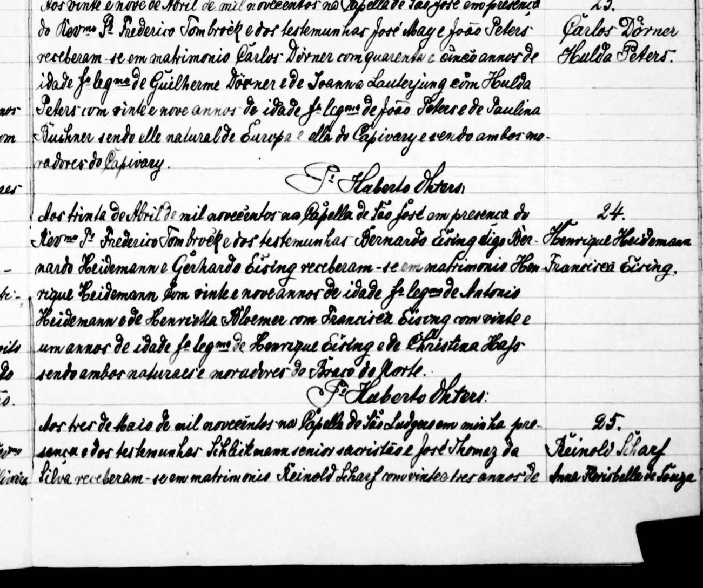
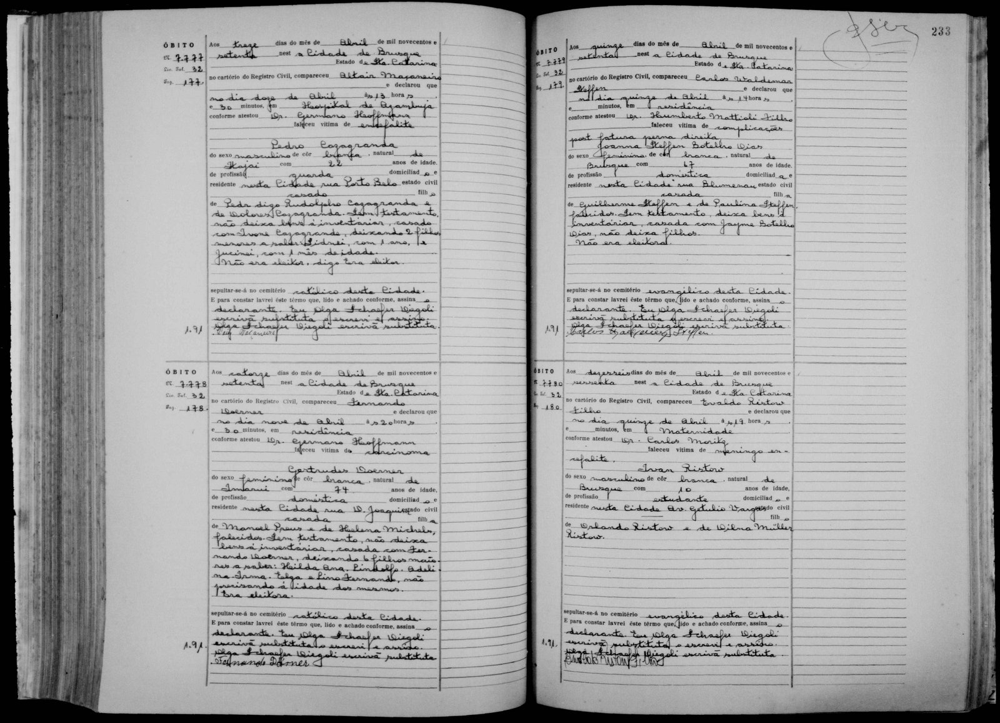
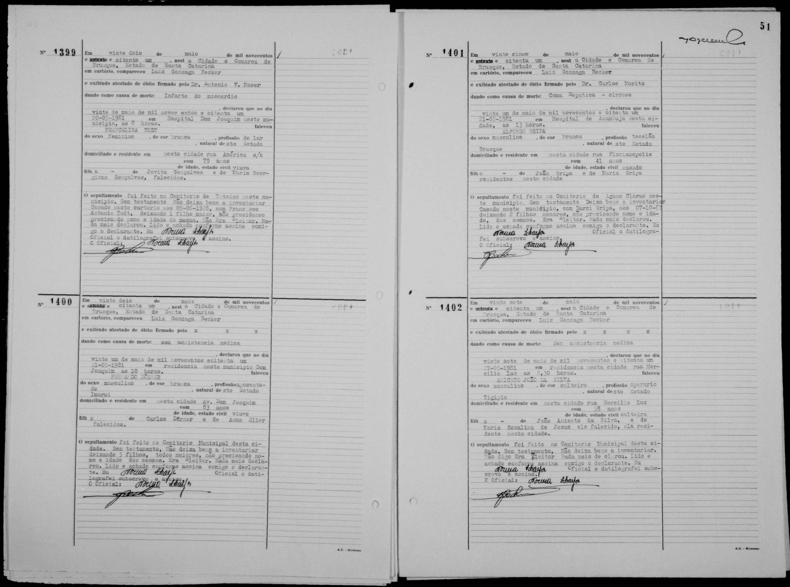

Parte III · Os Pioneiros de 1828, o Mosela e as Lâminas de Solingen
Capítulo 10 — Das Forjas de Solingen a Capivari e Brusque (Doerner, Eller e Peters)
Toda lâmina guarda o calor da forja. Toda família guarda o de um recomeço.
51,2° N · 7,1° L, Solingen, Renânia · 27,1° S · 48,9° O, Brusque, SC
Um dia, meu avô Fernando Dörner me contou que tinha participado de milícias de colonos que queriam apoiar uma invasão do Sul do Brasil pela Alemanha, e que depois mudou de lado. Nenhum papel da família registra isso. Antes de chegar lá, preciso contar de onde ele vinha, e até isso é difícil: a ficha do pai dele no FamilySearch, segundo a nota seca de um pesquisador, é uma fusão de três ou quatro homens diferentes.
O som da bigorna
Renânia, Reino da Prússia, por volta de 1854
Em Solingen, o som que se ouvia antes de qualquer outro era o do martelo. Fazia séculos que a cidade, nas colinas do Bergisches Land, entre o Reno e o vale do Wupper, vivia de lâminas: espadas, facas, tesouras, navalhas. Os riachos que desciam para o Wupper moviam os rebolos de afiar, e em cada vale havia um Kotten, a pequena oficina onde o metal chegava da forja ainda escuro e saía polido. Era uma indústria de casas e de famílias, em que o ofício passava de pai para filho junto com o sobrenome.
É desse mundo, provavelmente, que vem o meu bisavô Carlos Dörner. O que um documento brasileiro garante sobre ele é pouco e firme: o assento do segundo casamento, em 1900, diz que era filho de Guilherme Dörner e de Joanna Lauterjung, que tinha quarenta e cinco anos e que era “natural de Europa”. Nasceu, portanto, por volta de 1854 ou 1855.
Preciso corrigir aqui o que as primeiras versões deste livro diziam, porque elas copiavam o FamilySearch. Lá, Carlos aparece como “Carl Reinhard Dörner”, nascido em Solingen em 20 de novembro de 1854, numa ficha que mistura vários homens. Um pesquisador deixou nela uma nota seca: obviously a merger of 3-4 different men, uma fusão de três ou quatro homens diferentes. Há pelo menos três razões para a confusão. Primeiro, Carlos teve duas certidões de nascimento, o que já basta para duplicar uma pessoa num índice. Segundo, ele teve um filho chamado Carlos Reinaldo Doerner, e “Reinhard” é Reinaldo em alemão: é muito provável que o nome do filho tenha sido grudado no pai. Terceiro, Guilherme tinha irmãos, e é possível que outras famílias Dörner, de tios de Carlos, também tivessem um filho chamado Carl. Num tempo em que se repetiam os nomes dos avôs em todos os ramos, um “Carl Dörner” nascido nos anos 1850 pode ser o nosso ou um primo dele. Por isso, a data de 20 de novembro de 1854 e o batismo de Solingen ficam, neste livro, como hipótese a conferir, e não como fato.
Os registros que o FamilySearch reuniu começam com um batismo na Alemanha e terminam, do outro lado do oceano, com um lavrador de Santa Catarina chamado simplesmente Carlos Doerner. Entre um ponto e outro, há um vazio que ainda não consegui preencher. Não sei em que ano ele embarcou nem em que navio, se veio menino com os pais ou rapaz, sozinho. A tradição da família liga o sobrenome Lauterjung às guildas de cuteleiros de Solingen. É uma ligação plausível, porque a cidade inteira era cutelaria, mas eu a anoto como tradição e não como prova. Nenhum documento que tenho nas mãos diz que Wilhelm ou o pai de Joanna batiam ferro.
Mesmo assim, começo a história dos Dörner pela imagem da bigorna, porque ela serve a uma ideia que atravessa o livro. Johann Haas trouxe da Baviera o prumo e o gesso. Os Meier de Heumaden faziam rodas. Os Dörner vinham da cidade das lâminas. Matheus, Lucas: vocês descendem de gente que sabia transformar matéria dura em coisa útil. Na colônia, nenhum deles exerceu o ofício de origem. Carlos Doerner aparece nos papéis brasileiros como lavrador. A mão que talvez tivesse aprendido a temperar o aço aprendeu a derrubar mato, a plantar milho na encosta e a criar quinze filhos.
Na meteorologia, quando uma massa de ar atravessa um oceano, ela perde algumas propriedades e adquire outras, mas um bom analista ainda reconhece nela a origem. Chamamos isso de modificação. As famílias imigrantes também se modificavam assim. Perdiam o ofício, a língua da aldeia, às vezes a confissão religiosa, e conservavam outra coisa, mais difícil de nomear e mais teimosa. Neste capítulo procuro essa outra coisa no ramo da minha mãe.
Os Eller da Vestfália
Vestfália e São Bonifácio, décadas de 1850 e 1860
A segunda corrente deste capítulo vem da Vestfália. Franz Adam Eller foi batizado em 3 de março de 1832 numa paróquia de São Pedro e São Paulo, na Vestfália. O FamilySearch não diz em qual das muitas igrejas com esse nome, e uma nota de outro pesquisador explica que “Adam” era o segundo nome dele, não parte do sobrenome. Franz Adam casou com Anna Maria Knopker, de quem quase nada sei além do nome e de que nasceu na Alemanha. Deles nasceu Anna Eller, a minha bisavó.
As primeiras versões deste livro diziam que Anna nasceu no Rio Grande do Sul, em 1858, e eu cheguei a escrever uma página sobre a menina que teria aprendido o minuano antes das letras. Tive de apagá-la. No FamilySearch, a data e o lugar do nascimento de Anna trazem uma nota do próprio sistema avisando que foram gerados automaticamente, isto é, preenchidos por um algoritmo, sem documento nenhum. Os irmãos dela contam outra história. Guilherme Eller nasceu na Alemanha em agosto de 1860; Mathilde nasceu em 31 de janeiro de 1866, e Maria em 28 de outubro de 1869, ambas em São Bonifácio, Santa Catarina. Os Eller vieram, portanto, da Vestfália para as colônias de Teresópolis e São Bonifácio na primeira metade da década de 1860, e Anna nasceu por volta de 1858 a 1860, provavelmente ainda na Alemanha. Nenhum papel que conheço os põe no Rio Grande do Sul. Fica a lição, que vale para toda a árvore: um dado de árvore colaborativa sem fonte é só um palpite com cara de documento. Nos registros, a profissão de Anna aparece como doméstica, que naquele tempo era o nome que se dava a quase todo o trabalho de uma mulher.
O certo é que Anna Eller e Carlos Doerner se casaram em Santa Catarina e formaram família na região de Imaruí e São Martinho. Na época, São Martinho era um distrito de Imaruí, e por isso os mesmos lugares aparecem nos documentos ora com um nome, ora com outro.
O primeiro casamento foi, provavelmente, por volta de 1877: o filho mais velho que encontrei nos livros de batismo, Wilhelm Dörner, filho de Carl Dörner e Anna Eller, foi batizado em 4 de agosto de 1878. Depois vêm uma Maria Anna em 1880, um Carlos Reinaldo em 1882 (o filho cujo nome, como contei, acabou confundido com o do pai), uma Paulina Rosalia em janeiro de 1886, um Robert em 1890 e uma Wilhelmina em 1892. O FamilySearch põe ainda uma Maria, casada com Alberto Feuser, nascida em maio de 1886, o que é impossível ao lado de Paulina Rosalia, nascida quatro meses antes; uma das duas datas está errada. Carlos Reinaldo, o filho de 1882, viveu em Vargem do Cedro, casou com Catharina Back em 1907, teve nove filhos e morreu em 2 de outubro de 1953. Os registros dele, batismo, casamento e óbito, estão todos nos índices, e é por isso que tenho tanta certeza de que o “Reinhard” da ficha do pai pertence a ele. A memória da família conta dez filhos desse casamento: Carlos Filho, Guilhermina, Adolfo, Bertha, Maria, Guilherme, Augusto, Anna, Germano e Fernando. As duas listas não coincidem por inteiro. Guilherme é Wilhelm e Guilhermina é Wilhelmina, mas Robert e Paulina Rosalia não aparecem na lista da família, e Adolfo, Augusto e Germano ainda não encontrei nos índices. Bertha encontrei, mas do outro lado: nasceu em 7 de março de 1901, em Vargem do Cedro, e é filha do segundo casamento. Pode ser que algumas crianças tenham morrido pequenas e saído da memória. Pode ser que os nomes de batismo e os nomes de uso fossem diferentes, como era comum. Registro a diferença e sigo em frente: o número dez é o da família, e cabe aos próximos pesquisadores conferi-lo nos livros.
O caçula dessa primeira leva foi Fernando Dörner, nascido em 24 de agosto de 1897, em São Martinho. É o meu avô materno. Pouco depois do nascimento dele, por volta de 1898, Anna Eller morreu. O FamilySearch põe a morte em Imaruí. A data exata não aparece em nenhum documento que eu tenha visto. Ela tinha uns quarenta anos e deixou um bebê no berço e uma casa cheia de filhos. É a primeira das mulheres deste livro que morre quase junto com o nascimento de um filho. Não será a última, e a outra vocês encontrarão no Capítulo 12. Naquele tempo, a morte de parto também fazia parte das condições em que as famílias viviam.
O assento número 23
Capela de São José, Capivari, 29 de abril de 1900
Um homem de quarenta e cinco anos, viúvo e com a casa cheia de crianças, não fica muito tempo sozinho numa colônia. Quem cozinha, quem cuida do caçula de dois anos, quem ordenha a vaca enquanto ele está na roça? Na sociedade colonial, o segundo casamento de um viúvo era uma questão de sobrevivência, e os vizinhos e o padre sabiam disso. Imagino que tenha sido mais ou menos assim que Carlos Doerner chegou à Capela de São José, no Capivari, numa manhã de outono de 1900, para casar com Hulda Peters.
Hulda nascera em 20 de agosto de 1870, no Capivari, e fora batizada em 5 de dezembro daquele ano em Teresópolis, hoje Águas Mornas. Era filha de João Peters (Johann Heinrich Theodor Peters, nos registros mais antigos) e de Paulina Büchner. Tinha vinte e nove anos, dezesseis a menos que o noivo. Ao casar, recebia de uma vez uma família inteira para cuidar.
Na família, contava-se a história de Carlos Doerner de um jeito torto. Ouvi mais de uma vez, meio rindo, que o bisavô “tivera duas mulheres”, e houve até quem falasse em três. Quinze filhos e duas esposas, num tempo em que pouca gente sabia as datas, produziam esse tipo de lenda. O documento a desfaz. Carlos foi viúvo e casou de novo, como mandavam a lei e a Igreja.

Abro a imagem do assento na tela, amplio e leio linha por linha, como fiz em Moosbach com a letra gótica (essa história ainda virá). Aqui a letra é a caligrafia inclinada de um padre do interior de Santa Catarina, em português com a grafia da época: “receberam-se em matrimonio Carlos Dörner com quarenta e cinco annos de idade, filho legítimo de Guilherme Dörner e de Joanna Lauterjung, com Hulda Peters com vinte e nove annos de idade, filha legítima de João Peters e de Paulina Büchner, sendo elle natural de Europa e ella do Capivary e sendo ambos moradores do Capivary”. As idades conferem com as datas de nascimento: ele fizera quarenta e cinco em novembro e ela faria trinta em agosto. Na margem direita estão o número, 23, e os dois nomes.
Durante muitos anos circulou na pesquisa uma segunda versão do assento número 23, de origem que nunca consegui achar. Ela falava da mesma capela e do mesmo dia, mas dava outras testemunhas (Augusto Peters e Henrique Hömke), dizia que os noivos moravam no Braço do Norte, era assinada por um Padre Francisco Auling e trazia uma frase bonita: “depois de dispensados do impedimento de religião mista”. Voltei à imagem e pedi uma segunda leitura cuidadosa, linha por linha. O que o livro diz é outra coisa: o casamento foi feito na presença do reverendo Frederico Tombröck, com as testemunhas José May e João Peters, o pai da noiva, e o assento é assinado pelo padre Huberto Ohters. Não há dispensa nenhuma, nem Auling, nem Hömke, nem Braço do Norte. Aquela segunda versão não tem apoio em nenhum documento que alguém tenha visto, e eu a deixo de lado.
Ficha do Arquivo: Assento nº 23/1900, livro de casamentos que inclui a Capela de São José (Capivari) e a Capela de São Ludgero; região de Braço do Norte, SC. Casamento de Carlos Dörner (45 anos, natural da Europa) e Hulda Peters (29 anos, natural do Capivari), em 29/04/1900, na presença do Revmo. P. Frederico Tombröck; testemunhas José May e João Peters; ambos moradores do Capivari; assina o P. Huberto Ohters. Sem menção a dispensa. Arquivo: imagens/casamento_carlos_doerner_hulda_peters_1900.png.
Como cientista, guardo a lição. Uma frase repetida muitas vezes, com nome de padre e tudo, pode não ter nascido de documento nenhum. Quando duas versões discordam, quem decide é a fonte que se pode abrir e ler, e aqui ela está diante de nós.
Se a dispensa existiu, e acredito que sim, ela diz algo importante. Religião mista era o termo canônico para o casamento entre um católico e um batizado de outra confissão, em geral protestante. A Igreja permitia esse casamento, mas exigia dispensa e, quase sempre, a promessa de batizar e educar os filhos na fé católica. Um dos dois noivos, portanto, não era católico. Qual deles?
Aqui as pistas se cruzam. Os filhos do primeiro casamento de Carlos aparecem nos índices de Registros da Igreja Católica de Santa Catarina, o que faria dele, pelo menos na prática, um católico. Mas ele nascera em Solingen, uma cidade de maioria protestante, e numa coletânea de estudos sobre a Colônia Santa Isabel organizada por Toni Jochem, um artigo de Antônio Carlos Glück e Lucas Mendes Laureth sobre os holandeses luteranos da região registra uma Henriette Dörner, nascida em 24 de outubro de 1866, casada em 12 de julho de 1891 na igreja evangélica de Santa Isabel. O mesmo artigo conta que o pastor luterano Christian Zluhan, a partir de 1879, descia o vale do Capivari para atender as famílias evangélicas espalhadas pelo sul, e que em 1886 chegou até Braço do Norte. Não sei se Henriette era parente de Carlos. Sei apenas que havia Dörner luteranos naquela paisagem. E Hulda, batizada em Teresópolis, filha de Peters e Büchner, pode muito bem ter sido a evangélica do casal. O ato de 28 de abril de 1900, na véspera, aponta nessa direção: é o que se esperaria se ela tivesse sido recebida na Igreja Católica, ou batizada sob condição, para poder casar no dia seguinte. Ainda é leitura de índice, não da página; mas é a primeira pista documental de qual dos dois noivos vinha de fora. A tradição da nossa família diz que “os Doerner eram luteranos”. Os documentos dizem que, pelo menos desde 1878, os filhos de Carlos eram batizados por padres. As duas coisas podem ser verdade ao mesmo tempo, em momentos diferentes da vida da mesma família.
Para mim, a dispensa de 1900 é uma das chaves deste livro. Mostra que, já naquela geração, a fé em Santa Catarina passava por negociação, e não apenas por herança. Do lado Haas, todos eram católicos da Baviera. Do lado da mãe de vocês, como vocês verão nos próximos capítulos, quase todos eram luteranos: os Lohmann, os Hoeveler e os Funke da Coroa do Advento. Quando Bárbara e eu nos casamos, juntamos de novo duas tradições de fé. Mas o gesto já estava escrito, numa letra inclinada, no livro de uma capela do Capivari, cento e poucos anos antes.
Com Hulda, Carlos teve mais filhos. A família guarda os nomes de Laura, Clara, Carlos Júnior, Ida e Ricardo. Os índices dão outra lista: Bertha, em 1901; Joanna, em 1902; Emma, em 1903, que morreu aos catorze anos; João, em 1905; Gustavo, em 1906; e um Martinho. As duas listas não têm um nome em comum. Pode haver nomes de uso, crianças que os índices não alcançaram, ou lembranças de primos misturadas às de irmãos.
É aqui que aparece o outro Carlos. No mesmo perfil do FamilySearch está pendurado um casamento civil de 9 de outubro de 1893, em Águas Mornas, de um Carl Dörner com Charlotte Elisabetha Stock, de São Bonifácio, com filhos nascidos em 1896, 1898 e 1900: Emma, Teodoro e Daniel. Em 1893 o nosso Carlos estava casado com Anna Eller, que ainda teria Fernando em 1897. São, portanto, dois homens com o mesmo nome, contemporâneos, morando a poucas léguas um do outro. É provável que fossem parentes, talvez primos, filhos de irmãos de Guilherme; mas isso ainda é hipótese. Na árvore que acompanha este livro, separei as duas famílias. Somando os dois casamentos do nosso Carlos, chega-se aos quinze que a família repete com um misto de orgulho e espanto. Quinze filhos de duas mães, irmãos e meios-irmãos que cresceram juntos na mesma casa, e um caçula da primeira leva, Fernando, que não deve ter guardado nenhuma lembrança da própria mãe. Para ele, Hulda foi a mulher que o criou. Os papéis não dizem como ele a chamava.
Esse número diz também alguma coisa sobre a terra. Na Renânia e na Vestfália de onde vinham os Dörner e os Eller, a partilha igualitária retalhava as propriedades a cada geração, até não sobrar terra que sustentasse uma família, e esse foi um dos motores da emigração. Na colônia catarinense, quinze filhos não cabiam num lote de vinte e cinco hectares. A solução, que a antropóloga Ellen Woortmann descreveu tão bem para os colonos do Sul, era quase sempre a mesma: um filho ficava com os pais e indenizava os outros, e os demais partiam para frentes novas, como o Alto Vale, o Oeste e o Paraná. Assim a família se espalhava em vez de se dividir. O meu avô Fernando foi um dos que partiram.
Fernando e Gertrudes
São Martinho, Santa Catarina, por volta de 1921
No Capítulo 9 vimos de onde vinha Gertrudes Preiss. Ela nasceu em 5 de março de 1896, filha de Emanuel (Manoel) Preis e de Helena Michels, neta de Bernard Preis e Ignazia Loch por um lado e de Anton Michels e Angela Catharina Arns por outro. Era, portanto, neta da matriarca de noventa e seis anos e neta de um menino que desembarcou em Desterro em 1828. Quando Gertrudes e Fernando se casaram, juntaram-se num só casal quase todas as correntes da Parte III: o Mosela de Pünderich, o Hunsrück de Hermeskeil, Schweich junto a Trier, Solingen e a Vestfália. Eu sempre soube que a minha avó materna tinha “sangue antigo de Santa Catarina”, mas só montando a árvore percebi quanto. Por ela, Adelina descendia dos primeiros colonos alemães do estado; por Fernando, de um imigrante da Renânia, talvez da cidade das lâminas, e de uma moça da Vestfália.
A data do casamento me deu trabalho. Os índices do FamilySearch registram o casal mais de uma vez. Uma entrada de registro civil, com os nomes estropiados como “Fernando Doermer e Gertruda Preuss”, traz a data de 25 de fevereiro de 1913. Uma entrada de registro católico, “Fernando Dorner e Gertrud Puno”, traz 9 de julho de 1921. E há uma terceira, também civil, também de São Martinho, com o mesmo dia e o mesmo mês da primeira: 25 de fevereiro de 1923. O mistério se desfaz aí. Mil novecentos e vinte e três foi lido como mil novecentos e treze num dos índices. O casal casou na igreja em 9 de julho de 1921 e no cartório em 25 de fevereiro de 1923, quatro meses depois do nascimento da primeira filha, Hilda Ana, em outubro de 1922. Casar primeiro na igreja e só depois no civil era comum nas colônias. Em 1921 ele tinha vinte e três anos e ela vinte e cinco.
Ficha do Arquivo: Casamento de Fernando Dörner e Gertrudes Preiss. (a) Religioso: “Brasil, Santa Catarina, Registros da Igreja Católica, 1714–1977”, entrada “Fernando Dorner and Gertrud Puno”, 09/07/1921, Vargem do Cedro (ark:/61903/1:1:6BGD-68BP). (b) Civil: “Brasil, Santa Catarina, Registro Civil, 1850–1999”, São Martinho, 25/02/1923 (ark:/61903/1:1:XSXC-4TP1); a mesma entrada aparece indexada como 25/02/1913, provável leitura errada do ano. Em todas, o noivo é filho de Carlos Doerner e Anna Eller.
Em 30 de outubro de 1926 nasceu em São Martinho a filha Adelina. Foi a minha mãe, a Dona Adelina do Capítulo 1, a mulher que, nas Bodas de 65 anos, em 2012, aceitou contar a própria vida diante da minha câmera. Ela casou com o meu pai em 1947 e foi viver no Alto Vale do Itajaí, longe dos vales do sul onde tinha nascido. Os pais dela deixaram São Martinho, viveram em Vidal Ramos e, mais tarde, foram para Brusque, no vale do Itajaí-Mirim. As datas eu deveria ter perguntado à minha mãe, e não perguntei; acabei montando-as pelos registros dos filhos. Em outubro de 1926, quando Adelina nasceu, a família ainda estava em São Martinho. Em março de 1930, já registrava filhos em Vidal Ramos: Ottilia, nascida em janeiro de 1929, que morreu em junho de 1930 com um ano e cinco meses. Depois vieram Irma, em 1931, Lino Fernando, em 1937, e Celso, que nasceu e morreu em 1939. Em março de 1948, Adelina e o irmão Lindolfo casaram no civil no mesmo dia, no cartório de Vidal Ramos. A mudança para Vidal Ramos aconteceu, portanto, entre o fim de 1926 e o começo de 1930, e a família ainda estava lá em 1948.
Um texto que eu não conhecia fecha essas datas. Em 2011, Fábio Sidney Thiesen, no Jornal Mirim de Vidal Ramos (edição nº 508, 6 de julho de 2011), publicou um perfil do casal, montado com a memória da família. Segundo ele, Fernando e Gertrudes chegaram a Vidal Ramos em maio de 1927, no lombo de burros, com Hilda, Lindolfo e Adelina, que tinha sete meses e veio no colo da mãe. A conta bate com a certidão: Adelina nasceu em outubro de 1926. As primeiras terras foram no baixo Molungu, numa casa de chão batido, onde ficaram quatro anos, com ajuda da família Petry. Depois compraram terras em Santa Cruz e montaram uma serraria, que a partir de 1931 foi a principal atividade da família. Por volta de 1935 mudaram-se para o centro, para tocar um armazém de Ernesto Brás Barni. E em 1964, procurando tratamento de saúde, foram morar em Brusque, na casa da filha Hilda. É memória de família posta em jornal, não documento; mas as datas que posso conferir conferem. Por que saíram de Vidal Ramos eu sei em parte, porque o próprio Fernando me contou, e conto adiante.
Em setembro de 2012, poucos meses depois das Bodas, a família Doerner se reuniu numa festa de família, e fizemos naquele mesmo mês a viagem ao Rio Grande do Sul que vocês verão no Capítulo 12. Da festa ficaram fotografias e uma sensação: a de que os quinze filhos de Carlos Doerner tinham se tornado centenas de pessoas que, na maioria, não sabiam umas das outras. É a mesma sensação do centenário dos Haas, em 2013.
O avô de um retrato só
Vidal Ramos e Brusque, de 1927 a 1981
Deste avô eu tenho muito pouco. Não tenho uma carta nem um objeto. Tenho duas certidões de cartório, a do óbito da mulher e a dele próprio, as lembranças de conversas e um único retrato, que só apareceu quando este livro já estava escrito.

É uma foto de estúdio do interior: uma cortina estampada, um vaso de folhagens, uma cadeira para a menina. Fernando está de pé, de terno escuro, colete e corrente de relógio, com a mão no ombro da mulher. Tem uns trinta anos e o olhar sério de quem posa para um fotógrafo poucas vezes na vida. Gertrudes, sentada, segura Adelina vestida de branco. Hilda Ana, de vestido escuro, olha direto para a câmera. Quando a foto circulou nas redes, em 2017, alguém da família escreveu que o bebê era o tio Lindolfo; mas é a minha mãe, e o tio Lindolfo, então com uns dois anos e meio, ficou fora do retrato. É o único rosto do meu avô que conheço fora da memória. Para nós, os netos, ele era o Opapa, e Gertrudes, a Omama. Se algum primo guarda outra fotografia de Fernando Dörner, sobretudo dos anos de Vidal Ramos ou de Brusque, ela é a peça que mais falta neste arquivo.
Do lado Haas, o Fata deixou marcas de fé visíveis: foi presbítero em Ituporanga e construtor de igrejas. Fernando também era um homem muito religioso. O artigo de 2011 conta que ele hospedou e alimentou os construtores da igreja, do salão paroquial e da escola de Vidal Ramos, abriu a Estrada da Igreja, doou terras para o Clube Esportivo Fluminense e para a Escola Cacilda Guimarães e foi, por vários anos, delegado de polícia, sem receber nada por isso. Diz também que era leitor assíduo e assinante de revistas, que chegavam com dificuldade ao lugar. Não sei ainda em que anos foi delegado, nem como isso se cruza com a história que ele me contou.
Os pais de minha mãe não foram direto de São Martinho para Brusque. Antes, viveram em Vidal Ramos, no Alto Vale, a cidade em que eu cresceria. Foi lá que aconteceu essa história, que nenhum papel da família registra.
Sempre gostei de ouvir histórias de gente mais velha, e isso não passou despercebido à minha mãe. Quando eu já fazia o segundo grau, meu avô veio morar na nossa casa. Estava com câncer de pele, a doença já cheirava muito forte, e ele queria resolver os problemas dos terrenos antes de morrer. Um dia, perguntei a ele como tinha sido a Segunda Guerra em Vidal Ramos. Não perguntei o que ele tinha feito. Foi ele quem sentiu que devia falar disso.
Meu avô me contou, então, que tinha apoiado Hitler e participado de milícias de colonos que queriam apoiar uma invasão do Sul do Brasil pela Alemanha. Contou também que mudou de lado. Segundo ele, foi lendo revistas como as Seleções do Reader’s Digest que percebeu que estava do lado errado. A mudança não foi aceita em Vidal Ramos. Junto com as doenças de minha avó, foi uma das razões que o levaram a sair de lá e ir para Brusque.
Disse que não passava um dia sem se arrepender de ter apoiado Hitler, e que isso ele teria de resolver com Deus. Disse também que um líder como Hitler exerce um encantamento sobre as pessoas, e que isso voltaria a acontecer. Ele morreu em 1981. Não sei em quem pensava, nem se pensava em alguém.
A palavra para o que ele foi naqueles anos é quinta-coluna: o morador de um país disposto a ajudar, de dentro, a invasão de um exército de fora. A palavra é minha, não dele, e a única prova que tenho é o que ele mesmo me disse. Ele não precisava ter contado nada a um neto de quinze ou dezesseis anos que nem tinha perguntado por isso. Contou assim mesmo, doente e perto da morte.
Escrevo isso como guardei, sem acrescentar cenas e sem pôr aspas onde não tenho as palavras exatas. Há um dado que ajuda a pôr a história no tempo. A edição brasileira das Seleções do Reader’s Digest começou a circular em fevereiro de 1942, o mês seguinte ao rompimento do Brasil com a Alemanha, a Itália e o Japão, como parte da propaganda americana da política da Boa Vizinhança. Se as revistas que ele leu eram as Seleções em português, a mudança de lado não pode ser anterior a 1942. Não sei que grupo era esse, quem o organizava, quantos eram, se tinham armas, nem em que anos ele participou. Não sei como as revistas chegavam a Vidal Ramos, nem que artigos ele leu. A palavra “milícia” foi a que ele usou, ou a que eu guardei; pode ter sido uma organização formal, ligada a algum partido ou associação, ou um grupo de vizinhos que conversava e treinava. A história de Santa Catarina dos anos 1930 e 1940 tem de tudo isso, e não cabe a mim adivinhar qual era o caso dele. Os historiadores que estudaram o período, como René Gertz e Marlene de Fáveri, descrevem o quadro em que ele se moveu: o integralismo forte no Vale do Itajaí até 1937; os núcleos do partido nazista entre os teuto-brasileiros até a proibição de 1938; a campanha de nacionalização; e, depois de 1942, o medo da “quinta-coluna”, as buscas, as prisões e as divisões dentro das próprias comunidades. Mostram também que não existiu um plano militar alemão para invadir o Sul do Brasil, embora muita gente nas colônias acreditasse nele, a favor ou contra. Nada disso diz o que meu avô fez. Diz apenas que a história que ele me contou cabe no seu tempo.
Também não foi o único conflito. Houve em Vidal Ramos uma disputa de terras em que meu avô se colocou contra os outros colonos, e esses colonos acabaram presos. O artigo de 2011 conta o episódio do mesmo jeito, com mais detalhes. Muitos colonos se recusaram a pagar pelas terras e se revoltaram contra a companhia que as tinha vendido. Fernando, que tinha pago a sua, ficou do lado da companhia. Quando os revoltosos foram presos em Brusque, foi ele quem fez roça para as famílias que ficaram sem os homens, até que fossem soltos, cerca de um ano depois, com a vitória da companhia. Ainda não sei o ano, o nome da companhia nem os nomes dos presos.
O mesmo artigo lembra o outro lado da guerra. Na campanha do Estado Novo contra os teuto-brasileiros, a família foi tratada como suspeita, e falar e ler alemão virou agravante. O avô, “decepcionado”, quase proibiu os netos de aprender a língua, para protegê-los. O artigo não fala de milícias. A memória pública da família guardou a perseguição; a mim, ele contou também o que veio antes. As duas coisas podem ser verdade.
Não sei a data, os nomes nem o lado da lei em cada momento da revolta das terras. O que sei é que os dois episódios precisam ser lidos juntos, dentro de uma história maior: os conflitos de terra nas colônias, a desconfiança contra os teuto-brasileiros durante o Estado Novo e a guerra, as prisões de colonos, as divisões dentro das próprias comunidades. Um homem que mudou de lado numa questão e ficou contra os vizinhos na outra não saiu de Vidal Ramos só por causa da saúde da mulher.
Não vou julgar o meu avô com o que sei hoje, nem absolvê-lo com o que não sei. Prefiro fazer o que um pesquisador faz quando um dado não fecha: anotar, procurar a fonte e esperar. As perguntas para isso estão listadas, uma a uma, num documento à parte do repositório. Elas vão a jornais da época, a processos e inquéritos policiais, aos arquivos do Estado e aos estudos sobre o nazismo e o integralismo em Santa Catarina. Se as respostas vierem, entram aqui. Se não vierem, fica o que ele me contou. Para quem ouviu, isso também é uma fonte: a de um homem que, já velho e doente, disse ao neto que tinha errado, que tinha mudado e que se arrependia todos os dias.
Dois óbitos em Brusque
Brusque, Santa Catarina, abril de 1970 e maio de 1981
Os dois últimos documentos deste capítulo são certidões de óbito, e as leio com o cuidado que se tem com uma carta de família.
Gertrudes morreu primeiro. Foi às oito e meia da noite de 9 de abril de 1970, em casa, em Brusque. O médico, Dr. Germano Hoffmann, atestou carcinoma. O termo foi lavrado no cartório de registro civil em 14 de abril, e quem compareceu para declarar a morte foi o próprio marido, Fernando Doerner, que assina ao pé do termo. A certidão diz que ela era natural de Imaruí, tinha setenta e quatro anos, era doméstica, filha de Manoel Preus e de Helena Michels, ambos falecidos, e casada com Fernando Doerner, com quem deixava seis filhos maiores. O escrivão os escreveu em sequência: Hilda Ana, Lindolfo, Adelina, Irma, Olga e Lino Fernando. A sepultura foi feita no cemitério católico da cidade.

Há um detalhe que me comove mais que os outros. O declarante é o marido. Em quase todos os óbitos que li nesta pesquisa, quem vai ao cartório é um filho, um genro, um vizinho, às vezes um funcionário da funerária. Aqui foi Fernando, aos setenta e dois anos, quem ditou ao escrivão o nome dos sogros e dos seis filhos e assinou. Não sei se fez isso por costume, por dever ou porque não quis deixar que outro fizesse. A assinatura está lá, no pé do termo 7.778, folha 178 do livro 32.
Fernando viveu mais onze anos. Morreu às dez da manhã de 21 de maio de 1981, em casa, em Brusque, “sem assistência médica”, como diz o termo. Não houve atestado de médico, e por isso o termo não dá a causa. Eu o tinha visto, pouco antes, doente de câncer de pele, em nossa casa; não sei quando voltou para Brusque. Tinha oitenta e três anos. Era aposentado, natural de Imaruí, viúvo, filho de Carlos Dörner e de Anna Eller, ambos falecidos. Deixava cinco filhos maiores, sem testamento e sem bens a inventariar, o que talvez queira dizer que os terrenos estavam resolvidos, e era eleitor. Foi sepultado no Cemitério Municipal da cidade, que a família conhece como Parque da Saudade.

Ficha do Arquivo: (1) Óbito de Gertrudes Doerner, Registro Civil de Brusque, livro 32, fl. 178, termo nº 7.778, lavrado em 14/04/1970; falecimento em 09/04/1970, às 20h30, na residência; atestado do Dr. Germano Hoffmann, carcinoma; natural de Imaruí, 74 anos; filha de Manoel Preus e Helena Michels; declarante: Fernando Doerner; seis filhos maiores: Hilda Ana, Lindolfo, Adelina, Irma, Olga e Lino Fernando; sepultura no cemitério católico de Brusque. (2) Óbito de Fernando Dörner, Registro Civil de Brusque, termo nº 1400, lavrado em 22/05/1981; falecimento em 21/05/1981, às 10h, na residência, “sem assistência médica”; natural de Imaruí, 83 anos, aposentado, viúvo; filho de Carlos Dörner e Anna Eller; cinco filhos maiores; sepultura no Cemitério Municipal. Arquivos: imagens/doc_doerner_obito_gertrudes_preiss_1970.jpg e imagens/doc_doerner_obito_fernando_1981.jpg.
Duas observações de investigador. A primeira: os dois documentos dizem “natural de Imaruí”, e não São Martinho, como o FamilySearch. Não há contradição, porque quando eles nasceram São Martinho pertencia a Imaruí, e o escrivão de Brusque escreveu o nome do município de então. Um detalhe desses parece pequeno, mas quem procura registros de batismo nos livros errados perde meses por causa dele. A segunda: em 1970 havia seis filhos vivos, e em 1981 eram cinco. Entre um termo e outro, um dos filhos de Fernando e Gertrudes morreu. As duas certidões não dizem qual, mas o registro civil de Brusque diz: Lino Fernando, o caçula dos que sobreviveram, morreu em 14 de fevereiro de 1979, aos quarenta e um anos. Fernando enterrou um filho dois anos antes de morrer.
Brusque é uma cidade de rio. Nasceu em 1860 como Colônia Itajahy, na margem do Itajaí-Mirim, o braço menor do grande rio que atravessa o Vale. A água foi, como em todas as colônias, estrada, energia e risco. Movimentou as primeiras tecelagens que deram à cidade a sua fama e, de tempos em tempos, subiu para dentro das casas. Fernando morreu em maio de 1981. Três anos depois, em agosto de 1984, uma das grandes cheias do Vale do Itajaí inundou Brusque. Vieram outras em novembro de 2008, no desastre que matou cerca de cento e trinta e cinco pessoas em Santa Catarina, e em 2011. Em todas houve a mesma combinação de chuva persistente vinda do mar contra a encosta da serra, um rio estreito encaixado entre morros e uma cidade construída onde a água sempre passou. Eu trabalho com modelos de cheias no Itajaí, e quando abro o mapa de áreas inundáveis de Brusque procuro, quase sem querer, a rua onde moravam os meus avós. Não vou escrever aqui o nome dela. Basta dizer que, se tivessem vivido um pouco mais, teriam visto o rio entrar na cidade como entrou no Vale inteiro. No Capítulo 13 volto a esses rios, que no fim são um só problema.
Penso às vezes na distância entre o primeiro e o último documento deste capítulo. De um lado, a Renânia das forjas, onde nasce um menino por volta de 1854. Do outro, um cartório de Brusque em 1981, onde o filho dele, já velho, é registrado como “aposentado” e “eleitor”, duas palavras que nenhum Dörner de Solingen teria imaginado ao lado do próprio nome. O caminho entre esses dois pontos passa pela Vestfália dos Eller, por dez filhos de uma mulher que morreu cedo, por uma capela no Capivari onde dois cristãos de confissões talvez diferentes precisaram de uma dispensa para casar, por mais cinco filhos de outra mãe, por um caçula que nunca conheceu a dele e por uma moça que descendia dos barcos de 1828. Desse caminho saiu Adelina, e de Adelina saí eu.
Com este capítulo fecho a parte paterna da árvore de vocês. Do lado do meu pai e da minha mãe, já tínhamos quatro séculos de história. Faltava a outra metade dos meus filhos.
Para vocês descobrirem
- Qual dos noivos de 1900 não era católico? Procurem a página do ato de Hulda em São Ludgero, de 28 de abril de 1900, que só conheço pelo índice, e a outra via do assento nº 23.
- Em que ano e em que navio Carlos Dörner embarcou, e ele nasceu mesmo em Solingen? Nenhum documento que tenho responde.
- Que grupo era esse de que meu avô Fernando participou, quem o organizava e em que anos? As perguntas estão num documento à parte do repositório e vão a jornais da época, a processos e inquéritos policiais e aos arquivos do Estado.
- Quando meu avô disse que o encantamento por um líder como Hitler voltaria a acontecer, de que estava falando? Olhem o tempo de vocês e decidam se ele acertou.
- Algum primo guarda outra fotografia de Fernando Dörner, sobretudo dos anos de Vidal Ramos ou de Brusque? Perguntem também aos parentes de Vidal Ramos o que se conta sobre a revolta das terras: o ano, a companhia, os presos.